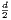
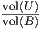
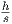

This column is also available in pdf: filename AdaptiveAlgorithmKleeMeasure.pdf
In 1977, Klee [4] asked whether the union ∪i=1n[ai,bi] of a set of n intervals can be computed in less than O(nlog n) or not. In general, the Klee’s measure problem (KMP) asks to calculate the union ∪i=1nBi of n axis-parallel boxes (also called isothetic boxes) in ℝd. This problem can be solved deterministically in O(nlog n) time for d ∈{1,2}, and (so far) in O(n⌈⌉) for arbitrary d ≥ 3, see Chan [3] (2013).
A simple Monte Carlo algorithm [2] consists in sampling uniformly s points (iid) in the smallest axis-parallel bounding box B of ∪i=1nBi: The probability of a sample point to fall inside the union U = ∪i=1nBi is . Therefore vol(U) ≃vol(B), where h denote the number of points falling in U. This is a probabilistic algorithm that runs in Õ(nsd) time.
Getting back to Klee’s original question: Can we beat the O(nlog n) bound (even in 1D)? This is where two computational aspects pop up: (1) the model of computation, and (2) the concept of adaptive parameter:
It is not easy to find adaptive (computational) parameters. For example, consider computing the diameter [5] of a set of n points of ℝ2. Solving this problem requires Ω(nlog n)-time on the algebraic computation-tree model. However, we can compute the smallest enclosing disk in Θ(n) time [6]: When a pair of antipodal points are on the border of the smallest enclosing disk, it defines the diameter.
In general, adaptive algorithms refine the concept of output-sensitive algorithms by allowing one to take into account further attributes of the input configuration that can be used to improve the overall running time [7] (1996). See also the instance-optimal geometric algorithms [1] (2017).
[1] Peyman Afshani, Jérémy Barbay, and Timothy M Chan. Instance-optimal geometric algorithms. Journal of the ACM (JACM), 64(1):3, 2017.
[2] Karl Bringmann and Tobias Friedrich. Approximating the volume of unions and intersections of high-dimensional geometric objects. In International Symposium on Algorithms and Computation, pages 436–447. Springer, 2008.
[3] Timothy M Chan. Klee’s measure problem made easy. In Foundations of Computer Science (FOCS), 2013 IEEE 54th Annual Symposium on, pages 410–419. IEEE, 2013.
[4] Victor Klee. Can the measure of ∪i=1n[ai,bi] be computed in less than o(nlogn) steps? American Mathematical Monthly, pages 284–285, 1977.
[5] Grégoire Malandain and Jean-Daniel Boissonnat. Computing the diameter of a point set. International Journal of Computational Geometry & Applications, 12(06):489–509, 2002.
[6] Nimrod Megiddo. Linear-time algorithms for linear programming in r3 and related problems. SIAM journal on computing, 12(4):759–776, 1983.
[7] Frank Nielsen. Adaptive Computational Geometry (“Algorithmes géométriques adaptatifs”). Thèse de doctorat en sciences, Université de Nice-Sophia Antipolis, France, 1996.
[8] Frank Nielsen. Fast stabbing of boxes in high dimensions. Theoretical Computer Science, 246(1):53–72, 2000.
[9] F.P. Preparata and M.I. Shamos. Computational geometry: an introduction. Texts and monographs in computer science. Springer-Verlag, 1988.